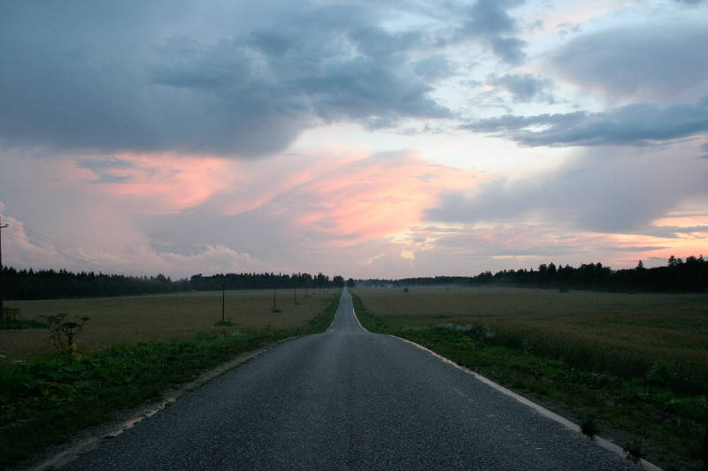
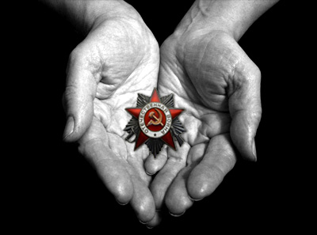
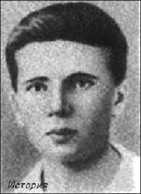

Лето 1965-го.
Я ребенок, семилетний. Куда-то едем с бабушкой на велосипедах.
Далеко.
Солнце. Лето. Мне очень хорошо.
По дороге, бабушка рассказывает историю про какое-то, немыслимо отдаленное, время. Про какого-то героя. Как он ведет неравный бой.
Интересно, но труднопредставимо.
Тема рассказа:
Какие-то русские танкисты, во время войны, на своем танке, оказались запертыми и окруженные немцами внутри города. Это был город Ровно.
Вариантов было два: погибнуть или сдаться в плен.
Они выбрали первый.
Экипаж погибал. Последних танкистов оставалось двое.
В совершенно безнадежной обстановке, вели бой до последнего снаряда и последнего патрона личного оружия. Они тоже погибли, эти последние.
В тот же день, немецкий генерал, командир атакующей группы, отдал приказ захоронить танкистов с воинскими почестями. Это было 28 июня 1941 года (шестой день войны).
Что и было исполнено: строй немецких солдат склонился, как надлежит, перед павшими солдатами.
Рассказ для меня был далек, как легенды о былинных богатырях. Не произвел впечатления: - "Это "эпос", бабуля!!"
А мы все едем, едем на велосипедах.
Наконец, приезжаем.
Это была деревня Ольхово. Оказывается, в той деревне есть наша родственница.
Звали родственницу - тетя Паня. Для бабушки она тетя, потому, что двоюродная сестра ее мамы.
Тетя Паня показалась худощавой, узкой, стройной, вежливой, и неэмоциональной. Совсем неулыбчивая. С медленными глазами. Одета аккуратно, но, как-то, строго и черно-серо.
Дальше пошло, как обычно. Мы в доме. Чай. Пряники. Взрослые женщины разговаривают. Причем, буднично, как каждый день видятся.
Я не слушаю. Совсем не интересно.
И тут происходит странное.
Тетя Паня, по просьбе бабушки, достает из мебели предмет. Аккуратно берет в руки и аккуратно нам показывает.
На стол не кладет, и нам взять не предлагает. Держит в своих ладошках.
Мы с бабушкой смотрим. Длинно смотрим.
Выглядело это так:

Его звали Александр Александрович Голиков.

Фото документа из ЦАМО (центрального архива министерства обороны) у меня имеется. В документе описание боя и последующие события.
Временами, встречается информация об отдании воинских почестей солдатам Красной армии солдатами Вермахта. Самый известный генерал-лейтенант Михаил Григорьевич Ефремов. Но отдание почестей генералу это не тоже самое, что рядовым танкистам.
Я никогда не слышал, чтобы российские солдаты отдавали уважение немецким за героизм и смерть. Догадываюсь, не услышу.И, еще. Наблюдение.
У меня не было ни одного "прямого" дедушки и была лишь одна "прямая" бабушка.
"Непрямые" дедушки, это оставшиеся в живых братья прямых. Поколение Саши Голикова.
На начало войны в нашей Ленинградской квартире жила семья из 6-ти мужчин, 5-ти женщин и двоих детей. Все друг друга любили.
На конец войны мужчин осталось двое, (то есть, 60% погибло). Из женщин пятеро. Дети выжили.
Это, за четыре года.
Те, кто решают жить или нет нашим детям, рассчитывают отсидеться в бронированных капсулах своих Мерседесов и подземных бункерах.
Теперь не выйдет.